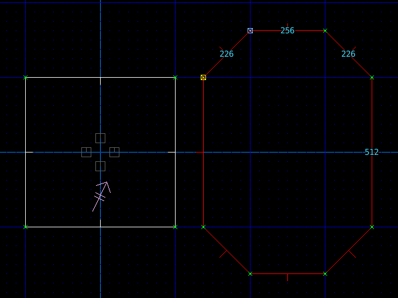
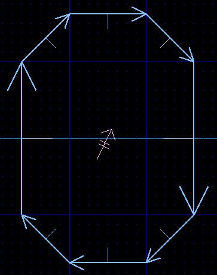
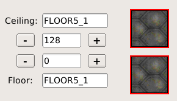
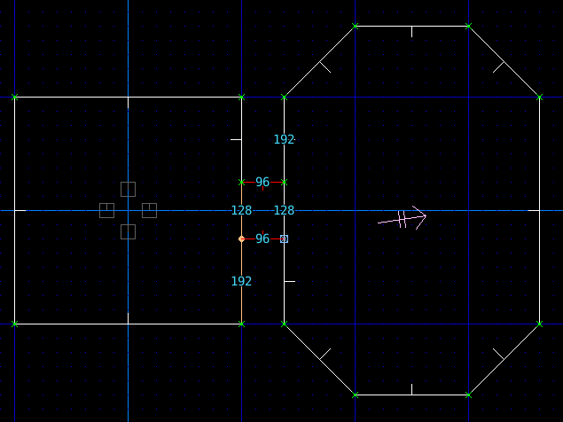
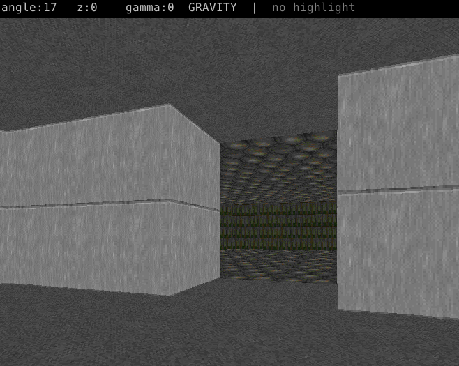
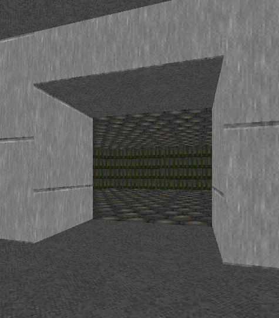
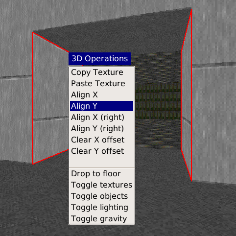

Main Menu
SourceForge
Links
Building Basics
|
Note: LMB: left mouse button click, RMB: right mouse button click |
To follow these building basics, create a new project in Eureka.
Adding a room
To help with drawing, press f to toggle grid snapping, press g to enable grid display, and press 5 to set the grid size to 32 units.
- Press TAB to switch to the 2D view
- Press v to enter vertices edit mode
- Use the RMB to draw a new sector. Make sure to keep adding vertices with the right mouse button, and to close the sector.

Texturing the new walls
Press l to enter linedef edit mode. The new linedefs should be selected, if not click with the LMB and drag a box around them to select.

- Position the mouse cursor inside your new sector and press ' to place the camera inside the room.
- Press TAB to enter 3D view
- Click the front sidedef texture button and pick the SLADWALL texture.


Texturing the new floor and ceiling
- Press TAB to return to 2D view
- Press s to enter sector edit mode. The new sector should remain selected, if not click the LMB to select it.
- Press TAB to return to the 3D view
- Click on both the Floor and Ceiling texture buttons, and select the FLOOR5_1 texture.


Joining rooms
- Press TAB to enter 2D view
- Press v for vertices edit mode
- Click with the RMB to insert vertices that bridge the neighbouring sectors
- Make the line of the doorway 128 units in length, this is the size of the wide door texture
- When the join is complete, the rooms are connected


Adjusting ceiling height
- Press TAB to enter 2D view
- Press s for sector edit mode
- Select the sector you want to adjust

- Press TAB to return to 3D view
- Click the ceiling +- buttons to adjust the ceiling height

- Alternatively press [ ] to adjust ceiling height via keyboard shortcuts

Texture alignment
- Press TAB to enter 3D view
- Click with the LMB to select walls with misaligned textures

- Press these keyboard shortcuts to align:
* x: align X offset with wall to the left * y: align Y offset with wall to the left * z: align both X and Y offsets with wall to the left * SHIFT-x: align X offset with wall to the right * SHIFT-y: align Y offset with wall to the right * SHIFT-z: align both X and Y offsets with wall to the right
- Alternatively press F1 to open the operations menu and select one of the align options.

Auto alignment
If you need to align multiple surfaces, you can use the auto-align feature:
- In the 2D view, enter linedef edit mode l
- Highlight all lines to align
- Press SHIFT-A to auto-align offsets on all selected linedefs
- This shortcut works in both 2D and 3D views